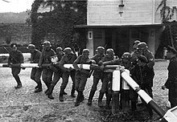
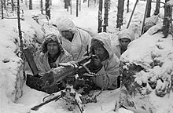

World War II (WWII or WW2), also known as the Second World War, was a global war that lasted from 1939 to 1945. It involved the vast majority of the world's countries—including
all the great powers—forming two opposing military alliances: the Allies and the Axis. In a state of total war, directly involving more than 100 million personnel from more than
30 countries, the major participants threw their entire economic, industrial, and scientific capabilities behind the war effort, blurring the distinction between civilian and
military resources. World War II was the deadliest conflict in human history, resulting in 70 to 85 million fatalities, with more civilians than military personnel killed.
Tens of millions of people died due to genocides (including the Holocaust), premeditated death from starvation, massacres, and disease. Aircraft played a major role in the conflict,
including in strategic bombing of population centres, the development of nuclear weapons, and the only two uses of such in war.
War breaks out in Europe (1939–40)
On 1 September 1939, Germany invaded Poland after having staged several false flag border incidents as a pretext to initiate the invasion. The first German attack of the war came
against the Polish defenses at Westerplatte.
In June 1940, the Soviet Union forcibly annexed Estonia, Latvia and Lithuania, and the disputed Romanian regions of Bessarabia, northern Bukovina and Hertza. Meanwhile,
Nazi-Soviet political rapprochement and economic co-operation gradually stalled, and both states began preparations for war.
Western Europe (1940–41)
German advance into Belgium and Northern France, 10 May-4 June 1940, swept past the Maginot Line (shown in dark red)
In April 1940, Germany invaded Denmark and Norway to protect shipments of iron ore from Sweden, which the Allies were attempting to cut off. Denmark capitulated after a few hours,
and Norway was conquered within two months despite Allied support. British discontent over the Norwegian campaign led to the appointment of Winston Churchill as Prime Minister on 10 May 1940.

Soldiers of the German Wehrmacht tearing down the border crossing into Poland, 1 September 1939

Finnish machine gun nest aimed at Soviet Red Army positions during the Winter War, February 1940